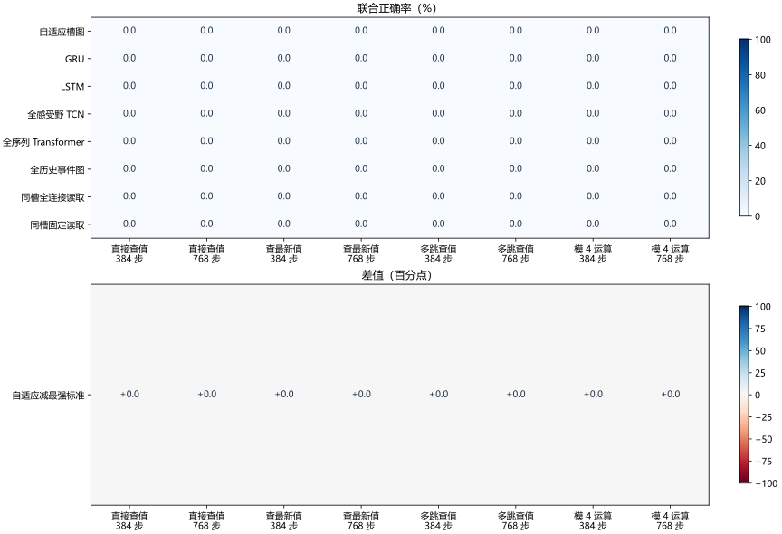
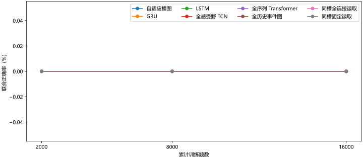
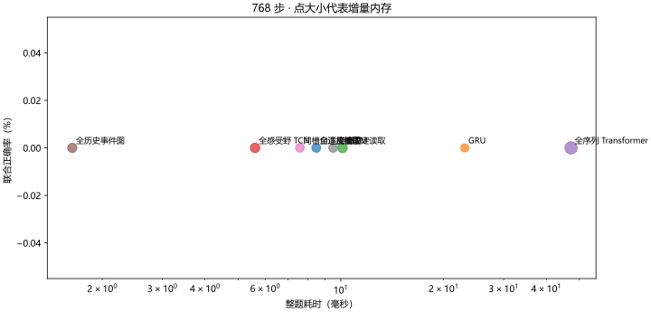
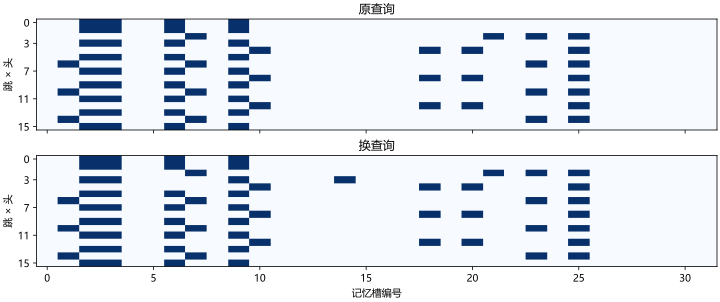

复杂结构
未达标模 4 运算 +0.00 点 · 多跳查值 +0.00 点
开发集筛选 · 封存集未打开 · 尚未达到全量资格评估。每模型三个种子，每次 16,000 道训练题，评测每格 32 组。
模 4 运算 +0.00 点 · 多跳查值 +0.00 点
384 步 0.00% · 768 步 0.00%
对照 GRU
冻结连边下降 0.00 点
| 任务 | 自适应版 | 最强标准基线 | 差值（点） | 题组配对 95% 区间 |
|---|---|---|---|---|
| 模 4 运算 | 0.00% | GRU · 0.00% | +0.00 | +0.00 至 +0.00 |
| 多跳查值 | 0.00% | GRU · 0.00% | +0.00 | +0.00 至 +0.00 |

单题允许不同变体分别计分，用于检查联合分数为零时是否已经学到部分规则。
| 模型 | 直接查值 | 查最新值 | 多跳查值 | 模 4 运算 |
|---|---|---|---|---|
| 自适应槽图 | 24.05% | 26.11% | 24.77% | 25.13% |
| GRU | 24.65% | 26.17% | 24.93% | 25.66% |
| LSTM | 25.26% | 25.65% | 24.23% | 24.56% |
| 全感受野 TCN | 24.91% | 25.78% | 25.35% | 25.51% |
| 全序列 Transformer | 24.05% | 26.11% | 24.77% | 25.10% |
| 全历史事件图 | 24.74% | 25.72% | 25.16% | 24.67% |
| 同槽全连接读取 | 24.05% | 26.11% | 24.77% | 25.10% |
| 同槽固定读取 | 24.05% | 26.11% | 24.77% | 25.10% |
| 任务 | 只读查询 | 只读末尾 | 忽略指令 |
|---|---|---|---|
| 直接查值 | 0.00% | 0.00% | 0.00% |
| 查最新值 | 0.00% | 0.00% | 0.00% |
| 多跳查值 | 0.00% | 0.00% | 0.00% |
| 模 4 运算 | 0.00% | 0.00% | 0.00% |
每格固定取两道验证题，曲线用于定位开始学习的阶段。

单线程 CPU、批量 1。增量内存以装载权重与题目后的常驻内存为基准。

| 模型 | 毫秒／题 | 毫秒／位 | 增量 MiB | 活跃读边 |
|---|---|---|---|---|
| 自适应槽图 | 8.475 | 0.00984 | 7.03 | 64 |
| GRU | 23.075 | 0.02680 | 4.93 | — |
| LSTM | 10.115 | 0.01175 | 9.24 | — |
| 全感受野 TCN | 5.606 | 0.00651 | 8.77 | — |
| 全序列 Transformer | 47.263 | 0.05489 | 18.28 | — |
| 全历史事件图 | 1.634 | 0.00190 | 8.16 | 6880 |
| 同槽全连接读取 | 7.587 | 0.00881 | 6.85 | 512 |
| 同槽固定读取 | 9.491 | 0.01102 | 6.86 | 64 |
深色代表该次读取选中了对应槽位。该图显示实际连边，答题正确性以成绩表为准。

1,024 步模 4。覆盖指实际读边命中值节点或携带该值的相邻节点，覆盖本身无法证明正确解码。
| 布局 | 联合正确 | 操作数覆盖 | 覆盖但答错 | 换边比例 |
|---|---|---|---|---|
| 原布局 | 100.00% | 100.00% | 0.00% | 76.50% |
| 只换序 | 20.83% | 100.00% | 45.05% | 73.37% |
| 只拉开 | 27.08% | 100.00% | 36.46% | 71.68% |
| 换序加拉开 | 23.96% | 100.00% | 39.58% | 70.64% |
相同种子、学习率与 2,000 道训练题。唯一变化是将写入门的初始偏置设为 −3。
| 种子 | 原写入门 | 保守写入门 |
|---|---|---|
| 2 | 0.00% | 0.00% |
| 20261027 | 0.00% | 0.00% |
| 20261028 | 0.00% | 0.00% |
每格为 8,000 题混合训练 → 8,000 题零干扰查值专项训练的联合正确率。两个配置在同一批独立诊断题上测量。
| 模型 | 0 步 | 16 步 | 384 步 | 768 步 |
|---|---|---|---|---|
| 自适应槽图 | 0.00% → 0.00% | 0.00% → 0.00% | 0.00% → 0.00% | 0.00% → 0.00% |
| GRU | 0.00% → 3.12% | 0.00% → 2.08% | 0.00% → 0.00% | 0.00% → 0.00% |
| LSTM | 0.00% → 0.00% | 0.00% → 0.00% | 0.00% → 0.00% | 0.00% → 0.00% |
| 全感受野 TCN | 0.00% → 1.04% | 0.00% → 0.00% | 0.00% → 0.00% | 0.00% → 0.00% |
| 全序列 Transformer | 0.00% → 0.00% | 0.00% → 0.00% | 0.00% → 0.00% | 0.00% → 0.00% |
| 全历史事件图 | 0.00% → 0.00% | 0.00% → 0.00% | 0.00% → 0.00% | 0.00% → 0.00% |
| 同槽全连接读取 | 0.00% → 0.00% | 0.00% → 0.00% | 0.00% → 0.00% | 0.00% → 0.00% |
| 同槽固定读取 | 0.00% → 0.00% | 0.00% → 0.00% | 0.00% → 0.00% | 0.00% → 0.00% |